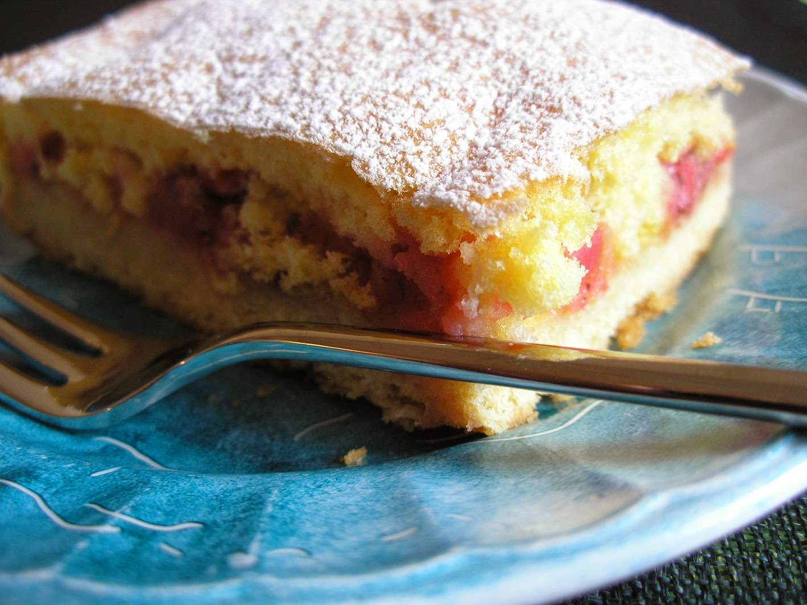

Recipe index
Estonian Rhubarb Cake

Description
Rhubarb is very popular in Estonian cooking and features in numerous recipes. As this tarty fruit is now in season it's a great time to make this tasty treat. Rabarberikook is very easy to make and has been enjoyed by Estonians for generations.
Ingredients
Base
- 2 ½ cups plain flour
- 1 cup granulated sugar
- 1 egg
- 150g unsalted butter
- ¼ tsp baking powder
Filling
- 600g rhubarb, chopped into small pieces
- 8 tbsp sugar
- 1tsp cinnamon
Topping
- 6 eggs
- 6 tbsp sugar
- 6 tbsp flour
- 1tsp vanilla extract
- Icing sugar for dusting on top.
Steps
- Preheat oven to 180 degrees and grease a rectangle cake pan. In a bowl cream the butter and sugar using an electric mixer. Add the egg. In a separate bowl combine the flour and baking powder and then add to the butter mixture. Spread the batter evenly into the greased pan. The mixture can be quite sticky so use the back of a wet spoon to get a nice smooth result.
- Combine the rhubarb with the sugar and cinnamon. Gentle spoon over the top of the base layer.
- To prepare the topping, beat the eggs and sugar together until light and airy. Add the flour and vanilla extract then pour over the rhubarb filling. Bake for 35-40 minutes. Allow to cool then sprinkle with icing sugar. Cut into squares and serve with cream.
From All Recipes